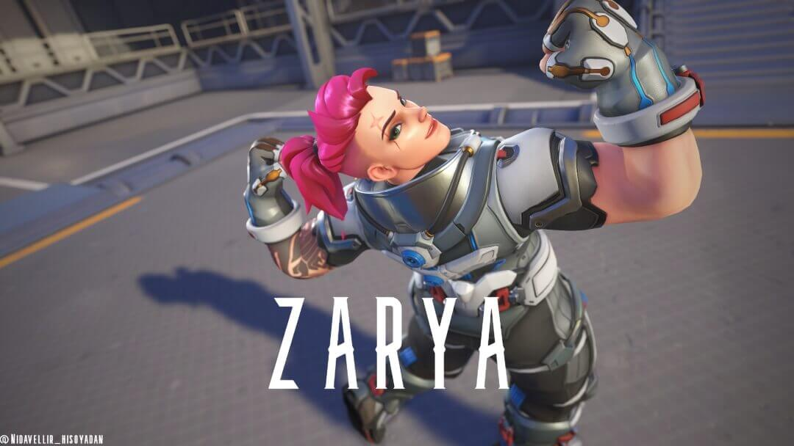

Quieres aprender a jugar a Overwatch 2?
Con Ow2 pasándose al free to play seguro ya has notado su cantidad de personajes jugables, que a día de hoy dan una cantidad de 35 héroes con los que podemos conseguir la victoria pero para eso primero debemos conocerlos tanto a ellos como los modos de juegos que conforman a este título. Empezemos por ahi si te parece bien.

Modos de juego:
Overwatch 2 cuenta con muchísimos modos que van rotando que los puedes encontrar en Arcade y ni hablar de los mapas creados por la comunidad donde puedes jugar mapas de parkour, entrenamiento o jugar a la papa caliente con genji, pero yo te hablaré de los 8 más normales y los principales que estarás jugando todo el tiempo y más si quieres entrar en el competitivo.
Modo Avance:
En este modo de juego los jugadores tendrán que conseguir el control de un robot, que empezará a avanzar hacia la base enemiga. Un equipo ganará si consigue llevar al robot hasta el punto de spawn del equipo enemigo antes que se acabe el tiempo, si el tiempo termina ganará el equipo con más metros empujados aunque también puede surgir el tiempo extra. Es casi parecido al modo escolta.
Modo control:
Este es un modo de juego de Overwatch 2 que se juega al mejor de tres rondas. Los jugadores tendrán que capturar un punto central por tres rondas. Estar dentro del punto sin ningún enemigo cerca hará que la barra de progreso empiece a avanzar. Si un equipo consigue llenar la barra al 100% entonces ganará la ronda.
Modo Escolta:
Este modo de juego dispone de forma asimétrica los objetivos a cumplir. El atacante tendrá que escoltar una carga a través de unas vías que atraviesan el mapa de juego. Los defensores tendrán que evitar que avancen la carga estando cerca de ella, ya que si hay enemigos cerca la carga no puede avanzar. A lo largo del recorrido hay varios puntos de control en los que el punto de aparición de los atacantes avanzará si pasan ciertos límites lo que también refresca el tiempo que tienen los atacantes para empujar la carga.

Modo Hibrido:
Este modo de juego es un modo de juego asimétrico con una división entre atacantes y defensores. En este modo de juego los atacantes tendrán que capturar un punto de interés mientras avanzan una carga a su meta. Es una combinación de los dos modos de juego anteriormente descritos.
Modo Captura la bandera:
No hay mucho que explicar son dos equipos que pelean por tomar la bandera del rival y llevarla a base el primero en capturar 6 veces ganará la partida, también debo decirte que no podrás usar tus habilidades mientras llevas la bandera sino la dejarás caer en el mapa.

Héroes y sus roles:
Overwatch 2 tiene 36 héroes jugables hasta el día de hoy, que sabemos que irán aumentando con el tiempo. Sé que puede sonar abrumador 36 héroes pero si eres nuevo no los tendrás todos de golpe, el juego te dará solo un par y los demás irás desbloqueando a medida que vayas jugando y progresando(Completamente gratis).
Cuales son los Roles y que funcion cumplo?
Overwatch 2 se divide en tres roles que son : Tanque, Daño (DPS) y apoyo. Lo cual podrás elegir el que más quieras. Cada uno tiene una función especial en el equipo la cual deberás cumplir para que tengas más posibilidades de ganar la partida y de que tus compañeros no se enfaden contigo.
Tanque: Serás el escudo del equipo y tu función además de proteger a tu equipo ya que serás el héroe con más vida del equipo, tienes que abrir espacio para tu equipo así puedan entrar en zona y luchar por el punto. También podrás ser muy opresivo con algunos héroes en este rol pero recuerda que no eres inmortal.
Daño(DPS): El asesino del team y de los roles más divertidos de jugar, como dps tienes que ir por los heroes mas indefensos que son los de apoyo, un team sin los apoyo o también conocidos como los “healers o supports” es un team muerto, aclaró que no solo te encargas de ellos sino que también serás el que remate a un héroe que esté escapando todo dependerá del héroe.
Apoyo(Healer o support): El médico del team, tendrás que mantener vivo a todo tu team curandolo con diferentes habilidades o incluso potenciarlos. Y en algún caso podrás revivirlos. pero no creas que no podrás defenderte si te atacan o que no puedas llevarte alguna kill, solo recuerda tu deber principal.
Rol Tank y sus héroes:
Estos son todos los héroes en el rol de tanque hasta el dia de hoy y paso explicarte cada uno con todas sus habilidades, mis héroes recomendados para empezar si eres nuevo, pro tips y sus counters (Si no sabes lo que es buscalo, jaja na broma. counter es como se le dice a un personaje que por sus habilidades puede contrarrestar al tuyo).
Hana Song alias: D.VA
Fue gamer profesional, y más tarde puso sus habilidades al servicio de Corea del Sur pilotando un meca. Ella y otros pilotos, conocidos como el escuadrón MEKA, plantaron cara a los gwishin invasores, una amenaza mecánica de las profundidades del mar.
D.VA y sus habilidades:
-Cañones de fusión: dos cañones rotatorios automáticos de corto alcance, mucha cadencia y mucha dispersión.
-Impulsores: propulsores que te permiten volar y desplazarte rápidamente durante un tiempo limitado.
-Matriz de defensa: bloquea los proyectiles que te llevan desde la zona frontal.
-Micromisiles (habilidad definitiva): salva de misiles explosivos que impactan y hacen daño en área.
-Autodestrucción(Ultimate): sales eyectada del MECA y este explota tras unos segundos.
-Meca: Es como una segunda ultimate, ya que despues de que te hayan destruido el meca o hayas usado la Autodestrucción y hayas conseguido una kill al menos podras volver a llamar el meca lo cual si tienes un enemigo(que no sea un tank) cerca podras matarlo con la caida del meca.
-Eyección: D. Va abandona automáticamente el MECA cuando la vida se reduce a 0.
-Pistola de luz: una pistola automática que lleva la propia D. Va y solo la podras usar cuando no estes en tu meca.
Pro tips: Utiliza los Impulsores para llegar rápido a las zonas de conflicto o los puntos a tomar. Los Impulsores también sirven para abrirte paso en cuellos de botella. Golpea a los enemigos para empujarlos y que tus aliados te sigan mientras disparan. Combina los impulsores + la autodestrucción para lanzar el MECA hacia los enemigos y eliminar a varios al mismo tiempo. Aprende a intercalar entre los cañones de fusión y la matriz de defensa. Los jugadores menos experimentados tenderán a centrar su atención en ti... un error que debes aprovechar para avanzar hasta tenerlos a tiro de tus cañones. La Pistola de Luz de D. Va es un arma a tener en cuenta. Aunque el héroe sea muy débil, la pistola hace mucho daño si aciertas a la cabeza. Aprovecha tu tamaño y tu capacidad de dps para colarte por las filas enemigas y solicitar el MECA donde menos se lo esperan. Usa la Matriz de defensa contra tus principales enemigos: dps con mucha movilidad que se cuelan en las lineas enemigas, Reaper y Tracer. También puedes evitar la habilidad definitiva de Cassidy. No te defiente de los ataques físicos, así que cuidado con Genji y otros tanques como Reinhardt.
Tus principales counters: Dva no puede bloquear daño de rayos lo que significa que los héroes como symmetra, winston, zarya te destrozaran ya que no podrás bloquear ese daño con la matriz, Quiero mencionar también a reaper aunque si puedes bloquear su ult o algunos disparos el tiene una gran cantidad de daño a corta distancia lo cual puede destrozar tu meca muy fácil.
Akande Ogundimu alias: Doomfist
líder innato y guerrero de élite, perdió el brazo derecho durante la Crisis Ómnica, cuando se unió a las filas de Talon. Tras escalar puestos, acabó con la vida de su superior, el anterior Doomfist, así que se adueñó de su arma y título epónimos. Ahora, está decidido a sumir el mundo en un nuevo conflicto para cumplir su misterioso fin.
Doomfist y sus habilidades:
-Cañón de mano: Arma de corto alcance con dispersión. Se recarga automáticamente. La ráfaga de la escopeta es de muy corto alcance y no hace mucho daño, pero es sostenible. Los jugadores no necesitan parar y recargar, ya que los disparos se generan automáticamente con el tiempo.
-Golpe sísmico: Salta y destroza el suelo; es como una versión condensada de lo que hace Winston. No tiene ni de lejos la altura, pero el daño no es tan malo y el movimiento es mucho más rápido de ejecutar. El tiempo de reutilización es moderado, pero si se calcula correctamente debería estar listo para salir del combate después de recibir una paliza.
Bloqueo de poder: Protege de los ataques frontales. Ser capaz de absorber el daño en momentos cruciales es tan bueno o mejor que tener una gran reserva de salud. A diferencia de Sigma, que convierte este daño absorbido en defensa, Doomfist obtiene un fuerte impulso ofensivo por su Golpe de cohete.
-Golpe de cohete: Mantén pulsado para cargar y suelta para cargar hacia delante y hacer retroceder al enemigo. El daño aumenta si el enemigo golpea una pared. El tiempo de carga hace que este movimiento sea difícil de ejecutar. Pero con un gran combo o contra héroes con menos movilidad, este golpe los enviará volando hacia atrás. Puede potenciarse de dos maneras, haciendo que el rival golpee una pared o cargándolo con la absorción de Bloqueo de Poder.
La mejor defensa: Pasiva: Infligir daño con habilidades crea salud personal temporal. La clave para sobrevivir como tanque con Doomfist es estar infligiendo ráfagas de daño para simular una gran reserva de salud. Al saltar, disparar cuatro ráfagas de escopeta, absorber el daño y luego golpear a un objetivo contra una pared, se siente como un monstruo imposible de matar.
Golpe de meteorito(ULTIMATE): Salta en el aire y apunta con un círculo de tiro para luego golpear hacia abajo en la zona. La habilidad definitiva de Doomfist tiene más utilidad de la que cabría esperar. Puede utilizarla para escapar de una muerte segura y estrellarse sobre un oponente débil para conseguir una muerte rápida y algo de curación extra. Puede iniciar con ella encima de un grupo de enemigos para conseguir una reserva de vida irreal. O puede usarlo cuando un objetivo con poca salud cree que ha escapado.
Pro tips: Doomfist puede ser el peor personaje de todo el juego si no consigue realizar sus movimientos con gran precisión. Su reserva de salud es baja y su producción de daño es lo suficientemente insignificante como para que, si no está encadenando golpes, sea poco más que una molestia. Haz disparos inteligentes contra los mejores héroes DPS del juego y haz que cuenten. Ten cuidado de no golpear a los enemigos vulnerables. En un golpe frontal, envía a los tanques volando hacia atrás. Pero si salta detrás de las líneas de combate, intenta empujar a un objetivo más débil hacia delante. Incluso si no está cargado o no va a golpear una pared, cuenta con el equipo para acabar con estos objetivos fuera de posición.
Tus counters: Cualquier héroe que vuele te la va a poner muy dificil como puede ser echo o pharah, D.VA, otro tank que te puede joder mucho sera Roadhog por su gran capacidad de curarse y con su gancho puede fastidiarte muchos de tus ataques.
JUNKER QUEEN:
Provista de su hacha Matanza y un guante electromagnético, la feroz líder de los Chatarreros emprende una misión para dominar el mundo.
Habilidades de nuestra reina:
-Escopeta: escopeta de corredera normal con gran dispersión.
-Cuchilla Dentada: lanzas tu cuchilla y se queda clavada en el enemigo. Puedes reactivarla para recuperarla y atraer al enemigo con ella. De forma pasiva, los ataques cuerpo a cuerpo o lanzamientos hieren al enemigo y le hacen daño por tiempo (sangrado).
-Grito de Mando: concedes salud y velocidad de movimiento temporalmente a tus aliados y a ti.
-Matanza: hieres a los enemigos delante de ti y les infliges daño por tiempo (sangrado) con un golpe cuerpo a cuerpo.
-Subidón de Adrenalina: te sanas mediante todo el daño en el tiempo (sangrados) que infligen las heridas que provocas.
Masacre (ULTIMATE): cargas hacia adelante para herir a los enemigos, infligirles sangrado y evitar que reciban sanaciones aplicando antihealing.
Pro tips: Escopeta + Cuchilla, el combo definitivo: esta es una combinación muy sencilla, pero extremadamente letal. Úsala para sacar a tanques de su línea y romper brecha. También puedes usarlo para cazar a DPS ninja como Genji o Tracer o para destrozar a apoyos. Si tienes habilidad, puedes tirar a personajes por precipicios.Sangrado sin parar: la clave de Junker Queen es provocar sangrados durante todo el tiempo para recuperar vida de forma ininterrumpida. Ten en cuenta que Junker Queen es un tanque, pero cumple funciones de DPS y Apoyo de forma muy eficiente, Pero que no se te vaya la pinza creyendote inmortal. Grito de Mando: reserva esta habilidad para casos desesperados y cuando tu equipo necesita un pequeño empujón durando los últimos segundos de una defensa o ataque.
Counters: Los mejores héroes para que puedas eliminarla facil pueden ser Ana ya que te aplica su granada lo que hará que no te puedas curar con tu grito o te duerme y te remata alguno de su team, En el rol de tank debes tener cuidado con wiston, tal vez con Roadhog pero solo si tienen a una kiriko. y en dps tus mejores counters son flankers como puede ser genji o los sniper como hanzo, ashe, Widowmaker.
La defensora de Numbani alias: Orisa
risa, obra de Efi Oladele, una niña prodigio de tan solo once años, se concibió para defender la ciudad de Numbani de todo tipo de amenazas. Cuando el dúo logró frustrar el asalto de Doomfist, perteneciente a Talon, se convirtieron en heroínas nacionales. Ahora, Orisa está lista para proteger a los necesitados y usar su poder en pos del bien.
Orisa y sus habilidades:
-Ametralladora de Fusión Aumentada: una ametralladora térmica que no necesitas recargar, aunque sí debes enfriar cuando disparas durante mucho tiempo, lo cual te recomiendo que no dejes el click pulsado todo el tiempo por más que tengas balas infinitas tendras una barra que indica el calentamiento. Inflige más daño cuanta menor sea la distancia.
-Jabalina de Energía: lanzas una jabalina que aturde y repele al enemigo. Corta y cancela los ataques de los héroes, como por ejemplo la carga de Reinhardt, ult de Junker Queen. El daño aumenta si el enemigo choca contra algo al ser repelido.
-Fortificación: obtienes salud de duración limitada, reduces todo el daño recibido y te vuelves inamobible. Mientras la habilidad está activa, se reduce el calor que generan tus armas.
-Girojabalina: giras tu jabalina para destruir proyectiles y bloquear ataques físicos, empujas a los enemigos y aumentas tu velocidad de movimiento.
Terraluvión (habilidad definitiva): atraes a los enemigos, te quedas quieta y obtienes los efectos de fortificación mientras cargas un aluvión de daño. Pulsa el botón de habilidad definitiva si quieres activar antes el golpe final.
Pro Tips:Jabalina táctica: los usuarios novatos tienden a lanzar la jabalina en cualquier momento. Error. Reserva esta habilidad para frenar a los tanques enemigos durante los pusheos. Si frenas al tanque, frenas al equipo entero. Si pillas a un DPS ninja con ella (en la cabeza), le destrozarás la barra de vida. Puedes practicar tu punteria en el campo de entrenamiento o buscar mapas creados por la comunidad.
Tus counters: Acá llegamos a un problema, ya que como tal no hay un héroe que le haga counter directo a orisa, dependerá más de medir sus cooldowns y saber aprovecharlos, pero si podría decirte algunos heroes que te pueden ayudar un poco más a detenerla como lo pueden ser Ana por su antihealing y Zarya ya que no podrá repeler su daño.
El líder de Null Sector alias: Ramattra
Recien llegado el ultimo tank agregado al juego y nada impedirá que el brutal líder de Null Sector haga realidad su visión del mundo.
Ramattra y sus habilidades:
-Cambio de forma: Ramattra cuenta con su forma normal, Forma Ómnica, y su forma especial, Forma Némesis. Puedes cambiar a Némesis siempre que quieras, aunque debes esperar un enfriamiento de 8 segundos para cambiar nuevamente. Cada forma cuenta con sus propias habilidades.
-Acelerador de Vacío (Forma de Ómnico): lanzas una andanada de proyectiles con un patrón determinado.
-Barrera de Vacío (Forma de Ómnico): creas una barrera en la ubicación seleccionada, que tendrá 1000 de vida pero solo durará 3 segundos así que atento.
-Aporrear (Forma de Némesis): lanzas un puñetazo hacia delante, lo que genera una oleada de energía perforadora con cada golpe. Esta habilidad también te permite cubrirte para reducir en gran medida el daño frontal a costa de mucha movilidad.
-Vórtice Voraz: lanzas una nanobola que rebota en las paredes y que se propaga cuando toca el suelo, generando un campo de vacío circular. Los enemigos sufren daño y se ven ralentizados y repelidos hacia abajo lo cual no podrán saltar.
-Aniquilación (Habilidad definitiva): adoptas la Forma de Némesis y creas un enjambre de energía a tu alrededor. Este enjambre atacará a los enemigos cercanos y les infligirá daño ademas de decir que será infinita siempre y cuando haya un enemigo dentro del rango.
Pro tips: Aporrea sin piedad: la habilidad de aporrear es extremadamente buena, pero tiene el pequeño problema de que debes exponerte por completo al fuego enemigo. Úsala contra el tanque cuando tu equipo se centre en el mismo. Al causarle daño perforante, le obligarás a bajar el escudo ya que esta habilidad atraviesa escudos como el de Reinhardt y retroceder… ¡Ese es el momento para que todos lo destrocen! En resumen: utiliza esta habilidad para presionar durante los tira y afloja.
Counters: Tracer puede ser muy buena opción ya que Ramattra sufre de mucha lentitud, otros héroes pueden ser ana, Roadhog o Orisa, ellos si podran darte muchos problemas.
Vive con honor, muere con gloria. El cruzado alias: REINHARDT
Reinhardt Wilhelm vive según los antiguos ideales de la caballería: honor, justicia y valor. Fue uno de los fundadores de Overwatch y, durante décadas, luchó por el bien del mundo. Tras el declive de la organización, se trasladó a Europa para servir como caballero de antaño, defendiendo a los inocentes con su escudera, Brigitte, hasta que Winston les pidió retomar Overwatch.
Reinhardt y sus habilidades:
-Martillo a Reacción: Su arma principal y una de las 2 armas cuerpo a cuerpo principales. Su velocidad de ataque es un martillazo de lado a lado cada segundo, haciendo por golpe 85 de daño a todos los enemigos en un cono de 5 metros delante de Reinhardt, permitiendo devastar a grupos de enemigos muy juntos. Muy pocos héroes son capaces de aguantar estos golpes y menos de acercarse a atacar de frente, haciendo que sus golpes solo puedan ser lanzados tras golpear a los enemigos con Seísmo o al finalizar una Embestida.
-Barrera de protección: La habilidad de Reinhardt proyecta una barrera que es capaz de parar balas, proyectiles y explosivos. La función principal de la barrera no es para salvarte a ti mismo, sino para proteger a nuestros compañeros y darles cobertura para disparar o curarse.
-Embestida: Es la habilidad que ha sufrido más cambios, haciendo que sea más fácil de usar, pero es de lo mas divertido. Embestida nos lanza a gran velocidad hacia delante, atrapando a cualquier héroe enemigo que pase por nuesto camino. Cualquier héroe atrapado será dañado si impactamos con un objeto sólido; sin embargo, el daño que reciben los héroes enemigos ha sido disminuido. A cambio, la velocidad de giro ha sido aumentada hasta el 50%, facilitando atrapar héroes, y también se ha reducido el tiempo de recarga de 10 a 8 segundos, pudiendo cancelar la carga en cualquier momento.
-Onda de fueo: La única habilidad a distancia de nuestro Reinhardt, Tenemos dos de estas cargas para usar, el daño es de 90. Este proyectil es capaz de atravesar barreras protectoras y acabar con enemigos a distancia que traten de escapar pero solo usala si es para rematar ya que si tienen la vida completa es muy dificil que lo mates.
-Cae el martillo(ULTIMATE): Un devastador golpe frontal que daña y aturde a los enemigos frente a Reinhardt. Lo cual hará que todos caigan al suelo y puedan ser eliminamos, te recomiendo ir por los healers y dps para asegurarte llevar una baja, esta ulti puede cancelar otras como la de cassidy o reaper, y si ves una Mei enemiga usa la ulti siempre en ella :).
Pro Tips: Algunos consejos que puedo darte con Reinhardt son que con tu ebestida puedes llevarte una ulti de D.Va lejos de tus compañeros y aventarlo fuera del mapa o solo empujarla y cancelar la embestida y activar rapido la barrera de protección. Tambien puedes usar esta habilidad para bloquear ultis como la de reaper ya que te lo llevarás o la de ashe llevandote a su bob lejos de tus compañeros.
Tus counters: En el rol de tanque un Roadhog puede darte muchos problemas ya que con su gancho puede cancelarte muchas habilidades como tu ulti o embestida y con su ulti te deztrozara tu escudo en cuestion de segundos. Lo mismo Bastion ya que en su modo centinela(Torrreta) rompera tu escudo y serás carne de cañon para el. otros dps que pueden joderte son genji, tracer por su gran velocidad que tienen o sombra ya que te aplicara el hackeo y estaras vendido, ashe tamvbien podra molestarte ya que con su dinamita poidra quemarte sobre tu escudo. Y en el rol de support creo que la mejor opcion seria un Zenyatta ya que te aplicara el orbe de discordia y pff.
El cerdito alias: ROADHOG
Roadhog es un asesino enmascarado despiadado con reputación de destruirlo todo a su paso. Recorre el desierto australiano irradiado y repleto de escombros con el único socio que se le conoce: Junkrat, un joven criminal perturbado chatarrero, y nadie entiende por qué lo hace.
Habilidades del tocino:
-Escopeta de Chatarra: Cuentas con un arma de corto alcance, con dos tipos de disparos el prinmero es como una escopeta de toda la vida corto alcance con gran dispersion y el segundo que servira mucho para rematar ya que es para medio alcance. El daño que infliges a tus enemigos es bastante. Con solo un par de disparos puedes acabar con los héroes más débiles.
-Inhalador: Con esta habilidad eres capaz de curarte una gran cantidad de tu vida y reducir el daño que recibes durante un corto periodo de tiempo. Es así como puedes mantenerte al frente de la batalla y recibir todo el daño. Recuerda que con Roadhog serás como una carnada; usa esta habilidad para mantenerte a flote y ayudar a tus aliados.
-Garfio o gancho: De las habilidades más divertidas de usar y con la que harás que el equipo contrario se enoje contigo, Esta habilidad te permiten atrapar a un enemigo y traerlo hacia ti.
-Descarga de Chatarra(Ultimate): Con esta ultimate disparar una gra oleada de munincion hacia adelante que empujará a todo enemigo que se encuente delante tuyo, tambien podra combinar esta habilidad con las anteriores 2 ya que lo cancelara tu ultimate.
Pro tips: La habilidad del gancho es mucho mas util de lo que piensas ya que con esta podrás usarala para engachar la ultimate de D.VA y tirarla del mapa, tambien puedes salvar a tu equipo por ejemplo si un Cassidy activa su ulti solo tienes que engancharlo y dispararle y si quieres para asegurar la kill al momento de traerlo hacia ti y dispararle deberas dar un pase hacia delante y dar un golpe cuerpo a cuerpo esto e vitara a que el enemigo se escape a 1hp. tambien otro truco que puedes hacer con el gancho es si estas cerca de un abisco es enganchar a un enemigo y dar un giro de camara rapido hacia donde esta el precipicio esto hará que el enemigo enganchado caiga.
Tus counters: En rol de support Ana puede hacer que seas mas facil de eliminarte ya que bloqueara tu Inhalador con su granada lo cual no te curaras y si te duerme estaras K.O, Otro support que puede joderte la partida es Zenyatta ya que co nsu orbe de discordia serás mas debil pero el es muy lento asi que estaran iguales. En el rol de DPS tienes que tener cuidado con Reaper ya que el te reventara con sus escopetas y puede burlar tu gancho facilmente, otros dps que pueden joderte son hanzo, soldado 76 o junkrat. Y los tanques D.VA puede bloquear tu ult facilmente, Zarya usara tu ulti para aumentar su daño y orisa tambien podria darte problemas ya que con su jabalina te cancelara tu curación y con su fortificar no podra engancharla y ni tirarla con tu ulti.
Siebren de Kuiper o el melodias alias: Sigma
La vida del brillante astrofísico Siebren de Kuiper cambió para siempre cuando un experimento fallido le otorgó la capacidad de controlar la gravedad. Ahora Talon lo manipula para sus propios fines.
El melodias y sus habilidades:
-Hiperesferas: Con esta habilidad, lanzas dos cargas que explotan en poco tiempo y dañas el área donde lo lanzaste. Es una habilidad muy útil, pues su daño es bastante alto, incluso más que el de otros personajes. Si tu enemigo está en un alcance bastante alto desde el suelo, estas explosiones pueden llegar a esas elevadas zonas. Lo mejor de estos orbes es que puedes usar con ellos las ventajas de los pasillos: no explotan cuando golpean una pared, solo con un enemigo, así que aprovéchate del rebote y acaba con ellos.
-Barrera Experimental: Esta habilidad crea una barrera flotante delante de ti. Esta barrera sirve como escudo a una distancia elegida por ti mismo. Esta defensa ayuda especialmente a los personajes de apoyo que se encuentren en tu área. Puedes poner y quitar la barrera todas las veces que quieras y ponerla en la dirección que mires.
-Agarre cinetico: El Agarre Cinético permite absorber proyectiles y convertirlos en escudos para ti. En otras palabras, puedes transformar un ataque dirigido hacia ti en tu propia defensa.
-Acrecion o la piedra: La habilidad Acreción te permite recoger una masa de escombros en forma de piedra y lanzarlo contra un enemigo. De esta forma, podrás interrumpir a tus enemigos en medio de un ataque y no dejarlos acabar. Además, puedes atacar a aquellos sin protección de esta simple pero efectiva manera.
-Flujo Gravitacional(ULTIMATE): Como su nombre ya da indicios, es una habilidad capaz de controlar la gravedad. Esta manipulación permite llevar a tus enemigos al aire y luego estrellarlos contra el suelo de una. ¡Pero cuidado que tú también vuelas por los aires! Podrás elegir el rango de alcance y todo lo que haya en esa zona volará para luego caer.
Pro tips: Puedes usar tu pierdra para interrupir ultis donde los heroes esten quietos o tambien para cancelar una embestida de Reinhardt. Tu barrera Experimental puedes ponerla en la dirreción en la que mires lo cual lo vuelve una genialidad para salvar a tu team de la ulti de D.Va o aun mejor para bloquear la de pharah ya que puedes ponerla la barrera en su cara y asi se amte ella sola. Tu Agarre cinetico puedes aprovechar a bastion cuando este en modo centinela ya que te aumentaras tu escudo muchisimo, lo mismo con una ulti de reaper o la de roadhog.
Counters: En rol de tank podemos usar a Reinhardt, Wiston, Zarya ya que Sigma no podra absorber su daño. En rol DPS Symmetra, mei tambien funcionarian por la misma razón. Sombra tambien es un gran counter y ademas con la ulti de Sombra podras cancelar la de sigma en plena accion y asi salvar a tu team.
Wiston
Winston, un gorila superinteligente modificado genéticamente, también es un científico brillante y un defensor del potencial de la humanidad.
Wiston y sus habilidades:
-Cañon tesla: Arma principal de nuestro científico gorila, que dispara rayos en un cono frontal, y un pulso de rayos a distancia si se mantiene. Los nuevos jugadores apreciarán la sencillez de no tener que apuntar y disparar con el arma, pues atacará a todo lo que tengamos en frente de nosotros.
-Salto del gorila: Winston salta en el aire en la dirección que esté mirando, pues si hacemos un arco con nuestra cámara podremos saltar más alto. Al aterrizar haremos daño, pero es insignificante, solo nos servirá para acabar con algunos enemigos que traten de escapar a muy pocos puntos de vida. Es la habilidad principal de movilidad de nuestro gorila, con un tiempo de reutilización moderado, y servirá para entrar y salir justo cuando se recargue para molestar al equipo enemigo en puntos que estén defendiendo, causando problemas y desconcierto, pudiendo nuestro equipo aprovechar estos momentos más si hay un genji en tu equipo.
-Campo de fuerza: Una cúpula protectora que todos pueden atravesar, pero los proyectiles enemigos no pueden ni salir ni entrar. Con ella podemos incluso aislar momentáneamente enemigos para crear ventanas donde nuestros aliados pueden castigar a aquellos que se encuentren dentro, pues podemos evitar que ciertos sanadores tengan la oportunidad de curar a quienes estén dentro.
-Rabia primigenia(ULTIMATE): La habilidad definitiva de Winston, donde recurre a sus instintos naturales para obtener una gran cantidad de puntos de vida, a cambio de solo poder hacer daño, dando puñetazos a los enemigos que tenemos en un cono frontal y empujándolos hacia detrás.
Pro tips: Wiston es un tank muy sencillo sobre todo su ulti ya que no vamos a tener que pensar en que momento tirarla ya que debido a su sencillez sabemos que podemos usarla en cualquier momento como para despejar un punto o solo para tirar enemigos. Wiston tambien es la pesadilla de los francontiradores ya que con su salto puede llegar facilmente a ellos y dejarlos fuera de juego. Más que pro tips puedeo de decirte héroes con los cual combinar a Wiston puede ser brutales como genji ya que tu saltaras a por el enemigo recibiendo el daño y genji se encargara de reventarlo. Hanzo tambien podra ayudarte muchisimo ya que tu saltaras por los francos poniendolos nerviosos y hanzo debera dar el golde de gracia.
Counters: En rol de dps Reaper es tu mayor problema ya que te dejará echo pedazos en segundos, otro dps seria sombra ya que si te hackea no tendras forma de escapar y en Tanques los RoadHog podrá engancharte facilmente y joderte bastante.
WRECKING BALL
Wrecking Ball, mecánico inteligentísimo y habilidoso, además de luchador, surgió de los laboratorios de Colonia Lunar Horizon para convertirse en el campeón de Junker Queen.
Wrecking ball y sus habilidades:
-Cañones cuadruples: Su arma principal son cuatro cañones con una alta cadencia de tiro y una velocidad todavía mayor, lo que garantiza un daño rápido y efectivo. Por desgracia, las balas se dispersan bastante y su efectividad disminuye cuanto más distancia hay con el objetivo, pero eso no es ningún problema para él. Basta con acercarse usando sus otras habilidades y disparar cara a cara al enemigo.
-Bola arrolladora: La mayor ventaja del personaje es esta habilidad, capaz de convertir su robot en una bola y mejorar increíblemente su movilidad. Durante este modo no podrá atacar, pero podrá moverse a placer por donde quiera y acortar distancias con cualquiera, sea amigo o enemigo. Aprovechad bien esta habilidad para arrinconar a vuestros enemigos y avanzar a las posiciones lo más rápido posible.
-Gancho garra: Esta habilidad es la que le da su nombre al personaje, literalmente. Con este gancho podréis engancharos a cualquier pared y balancearos como una auténtica bola de demolición. No hay mejor manera de librarse de los adversarios que girando de un extremo a otro para lanzarlos por el borde, o empujarlos a vuestros compañeros de equipo. El daño que hace no es demasiado alto, pero su versatilidad y utilidad son indiscutibles.
-Impacto demoledor: A su movilidad y la capacidad de embestir a los enemigos, hay que sumarle otra capacidad más a su bola: aplastar a los enemigos. Cuando está muy cerca del enemigo, una flecha naranja lo señalará y dará pie a que use esta habilidad, haciendo que Wrecking Ball se estampe contra el suelo y lance por los aires a todo enemigo en 10 metros a la redonda. Con esto le daréis la oportunidad a vuestros compañeros de rematarlos antes de que caigan.
-Escudo adaptable: Hay habilidades para tanquear, y luego está la que tiene Wrecking Ball. Normalmente, esta habilidad le da 100 HP nada más activarla, pero la ventaja está cuando la activa a rango cercano de los enemigos. Cada uno que esté a menos de 10 metros le dará 100 HP adicionales cuando la use, logrando hasta la friolera de 1300 HP si lo hace en la cara de todo el equipo enemigo, prácticamente el doble de la vida que cualquier otro tanque. Con nueve segundos para aprovecharla, las posibilidades son increíbles.
-Campo de minas(ULTIMATE): Su definitiva es la definición máxima de «si te mueves, explotas». Al usarla, nada menos que 15 minas de proximidad se lanzarán a vuestro alrededor, convirtiendo el área en una trampa de la que nadie podrá escapar una vez dentro. Es la habilidad perfecta para ir a por todas y meteros entre las filas del equipo enemigo, destruyendo su seguridad de una al evitar que sean capaces de moverse. Además, cada mina hará 130 de daño, acabando con muchos héroes inmediatamente.
Pro tips: Si algo se le da bien a Wrecking Ball es convertirse en una molestia para todo enemigo que tenga la desgracia de cruzarse con él. Desde embestirlos o aplastarlos con Bolla Arrolladora a lanzarlos por el mapa valiéndose de Gancho Garra, este hámster no parará de molestar hasta eliminar a los enemigos de una forma u otra. Tiene muy fácil pegarse a ellos por sus habilidades y sus armas son muy destructivas a corta distancia, pudiendo eliminar a héroes con poca vida en un par de segundos.
Counters: Tus counter principales son Sombra, Roadhog y Ana ya que te bloquearan toda tu movilidad que es de lo que mas se beneficia WREACKING BALL.
La madre rusia alias: ZARYA
Aleksandra Zaryanova es una de las mujeres más fuertes del mundo: una atleta que sacrificó la gloria personal para proteger a su familia, sus amigos y su país en tiempos de guerra.
Zarya y sus habilidades:
-Cañón de partículas: Un arma que proyecta un haz lineal de luz a corta distancia y un disparo secundario que lanzas una granada de gravedad que atrae a los enemigos
-Barrera de partículas o burbujas: Crea una pantalla que absorbe y te proteje de todo el daño a tu alrededor lo cual potencia tu daño. Cuentas con dos cargas
-Barrera proyectada: Funciona igual que la anterior pero en vez de ponertela a ti mismo se lo puedes poner a un aliado para protejerlo, tambien cuentas con dos cargas.
-Bomba de Gravedad(Ultimate): Creas un pozo de gravedad que atrae a los enemigos y impide que escapen lo cual los deja a merced de ti y tu equipo para eleminarlos.
Pro tips: Las mejores opciones que puedo darte esque tu ulti puedes combinarla con una ultimate de hanzo ya que tu los juntas y hanzo con sus dragones los borra del mapa, lo mismo puedes hacer con genji, Bastion o ashe. Tambien aprocecha los disparos enemigos para potenciar tu daño. Si ves un Reinhardt viniendo con la embestida hacia ti puedes usar tus burbuja para protegerte.
Counter para Zarya: En tank Reinhardt puede ser un problema fuerte para ti, en dps bastion te deztrozar en su modo centinela aunque uses tus burbujas le da el tiempo perfecto para eliminarte. Y francontiradores como Widowmaker, ashe o hanzo tambien podran causarte mucho daño.
Rol DPS y todos sus héroes:
Una vez explicado los tanques y todos sus trucos, pasamos a los dps el rol más popular en mi opinión y con más cantidad de héroes actualmente. Este es el rol donde hay más complejidad y que necesitas más skill para dominar al completo, pero tranquilo que hay héroes que vengas del juego que vengas se te hará super fácil de usar.
líder de la banda Deadlock Rebels alias: ASHE
Ashe nació en el seno de una familia acaudalada, con unos padres más preocupados por su fortuna que por su hija. Su ambición y arrojo la hicieron rebelarse y formar la banda Deadlock, que no tardó en ganar reputación en los bajos fondos criminales. Tras conseguir que las bandas del sudeste cooperaran, Ashe se ganó un estatus de leyenda, ya que recuperó la notoriedad del que en su día fue el salvaje Oeste.
Ashe y sus habilidades:
-Víbora: rifle semiautomático con dos modalidades. El disparo de la cadera te permite moverte rápidamente a costa de precisión y daño. Usar la mira reduce la movilidad, pero aumenta el daño y la precisión.
-Recortada: acribillas a los enemigos que haya frente a ti y los empujas hacia atrás con una escopeta recortada, lo cual tambien puedes usar para conseguir altura.
-Dinamita: lanzas una dinamita que detona tras unos segundos o al dispararle.
-Bob: Despliegas a Bob (tu mayordomo), que carga hacia adelante, lanza a los enemigos por los aires y luego ataca con los cañones duales de sus dos brazos.
Pro tips para Ashe: Dinamita + disparo: práctica el disparo a la dinamita para provocar explosiones a conveniencia. Si dominas esta técnica, podrás usar la onda expansiva para tirar a jugadores por precipicios, por ejemplo. Otro consejo que puedo darte es que practiques el hacer un disparo apuntando y luego rápidamente das dos disparados desde la cadera, También respecto a su ultimate "BOB" siempre piensa bien si en ese momento bob podra ayudarte y muy importante en qué posición lo tiraras, si tendrá la suficiente visión para ver a los enemigos. y ten mucho ojo con los precipicios.
Sus Counters: En dps podriamos usar a la gran mayoria sino usar un fracontirador con mas alcance como puede ser Hanzo o Widowmaker, En rol de Tanque podriamos ir una D.VA.
Bep bup bep alias: Bastion
Antaño un combatiente de primera línea durante la devastadora Crisis Ómnica, ahora esta curiosa unidad Bastion se dedica a explorar el mundo. Le fascina la naturaleza, pero mantiene las distancias con una humanidad que aún recela de los robots.
Habilidades de Bastion:
-Modo Reconocimiento: versión normal de Bastion. Posee un rifle de asalto en el brazo de gran precisión y cadencia media.
-Modo Asalto: Bastion se convierte en un tanque que cuenta con una ametralladora rotatoria que cuenta con menos daño que el rifle de asalto, pero con muchísima más munición por cargador y cadencia.
-Reconfiguración: habilidad que te permite cambiar entre modos. Quedas vulnerable mientras la realizas.
-Granada Táctica A-36: una granada que puede rebotar en las paredes y que explota al impactar contra un enemigo o el suelo.
Modo Tanque (habilidad definitiva): te conviertes en un mortero (inmóvil) que dispara tres proyectiles de gran potencia en las zonas que señales mediante una cámara a vista de pájaro.
Pro tips: Cambia entre modos: usa el Modo Reconocimiento para moverte más rápido cuando tengas que retroceder y trata de usar el Modo Asalto para atacar a tus rivales, ya sea para hacer daño o para desgastar los escudos enemigos. En cualquier casi, nunca dejes de disparar.Usa el mortero con cabeza: la única parte compleja de Bastion. Trata de usar su habilidad definitiva cuando los aliados se junten en un mismo punto, ya sea para defenderlo o hacerlo avanzar. Cuanto más juntos, más te vas a llevar por delante. No actives esta habilidad en mitad de la batalla porque vas a morir.
Counter para bastion: En tank Sigma y D.VA te lo van a poner complicado, Dps un buen Genji no te dejara en paz o cualquier otro sniper te dejara fuera de juego y en supports pos la mayoria son casi iguales.
El pistolero alias: CASSIDY
Cassidy fue uno de los fundadores de la infame banda Deadlock, pero lo obligaron a unirse a Blackwatch, la división de operaciones encubiertas de Overwatch. Creía que podría enmendar su pasado luchando contra las injusticias del mundo; pero, cuando Overwatch desapareció, tocó fondo. Con el tiempo, eso sí, resurgió como mercenario para luchar solo por las causas que consideraba justas.
Habilidades de Cassidy:
-Pacificador: revólver preciso y potente con dos modos de disparo. Haz clic izquierdo para disparar tiro a tiro y clic derecho para una ráfaga.
-Evasión: realizas una voltereta, dash o quiebro en la dirección que elijas y recargas automáticamente el revólver, si faltase alguna bala en el tambor.
Granada Magnética: una granada de corto alcance que inflige más daño a los enemigos cuando se adhiere a uno de ellos. Hace daño en área.
Sin Perdón (ULTIMATE): retas a un duelo a todos los enemigos que tengas en tu visión. Activa la habilidad para marcar a los enemigos y luego vuelve a activarla para disparar un tiro letal a cada personaje marcado.
Pro tips: Aca no hay consejos como tal solo dependerá de ti y tu precisión ya que cassidy se benificia de esto, lo cual lo unico que te puedo recomendar es praccticar tu aim o buscar otro personaje. Y juega cerca de tu tanque.
Counter para Cassidy: En tank La gran mayoria puede anularte, En dps los snipers seran tu mayor enemigo y supports Ana puede joderte bastante.
ECHO
Echo es una robot polivalente y adaptable con la inteligencia artificial más sofisticada del mundo. El diseño fue obra de la doctora Mina Liao para las misiones de combate de Overwatch.
Habilidades de Echo:
-Disparo Triple: Disparas tres balas a la vez en un patrón triangular y con una candencia normal.
-Bombas pegajosas: Lanzas una andanada de bombas pegajosas que se pegan a los enemigos o superficies y explotan después de unos momentos.
-Vuelo: Vuelas hacia adelante rápidamente consiguiendo altura, luego planeas con libertad por unos momentos.
-Haz enfocado: Canaliza un rayo durante unos segundos, lo que inflige un gran daño a los objetivos con menos de la mitad de vida.
-Duplicación(Ultimate): Duplicas al héroe enemigo que elijas copiando todas sus habilidades y podran cargar su ulti mas rapido.
Pro tips: No te recomiendo este personaje si estas empezando ya que su ulti requiere conocer a la mayoria de heroes para poder aprovechar su ulti al 100%. Su haz enfocado también no lo uses para iniciar una pelea solo usalo para rematar ya que causarás muchísimo daño si el enemigo tiene menos de la mitad de su vida. Otro consejo no uses mucho lo de planear ya que te dejara muy vendido si en el otro team hay un hitscan.
Counters para Echo: En tank mi recomendacion seria usar a zarya ya que podras parar bastante daño. En dps todo lo que sea hitscan te servirá como podría ser: Soldado 76, Cassidy, Ashe, Widowmaker, Soujorn. Y en support una buena Ana o sino un Zenyatta.
El curación alais: GENJI
El ninja Genji Shimada estuvo al borde de la muerte tras un enfrentamiento con su hermano, pero Overwatch lo rescató. Para ello, la organización tuvo que convertirlo en un arma biológica con mejoras cibernéticas. Tras la caída de Overwatch, Genji no fue capaz de lidiar con su naturaleza y su propósito, de modo que buscó la paz estudiando al monje ómnico Zenyatta... hasta que recibió la llamada de Winston.
Geji y sus habilidades:
-Shurikens: Estas son las armas principales de genji las cuales podrás tirar 3 shurikens a la vez, el primer disparo será en línea recta y el secundario será en abanico.
-Desviar o el Deflectar: Genji saca una espada y desvía los proyectiles entrantes frente a él hacia donde apunta. También bloquea los ataques cuerpo a cuerpo.
-Golpe Veloz: Corre hacia adelante mientras cortas a los enemigos en tu camino. Conseguir eliminaciones te dará otra carga instantánea.
-Dragonblade: Genji desenvaina su Katana que daña significativamente a cualquiera que esté al alcance de sus cuchilladas.
Pasiva Trepamuros: Genji puede trepar por paredes.
Pro tips: Otro personaje que si eres nuevo no te lo recomiendo, ya que necesitas de mucha habilidad para sacarle todo el provecho a genji. Su Deflectar solo sirve en proyectiles lo cual los personajes como Zarya, Wiston, Symmetra te harán daño igualmente. Con esta habilidad también puedes devolver ultis como las de Hanzo, Cassidy, Zarya y el sleep y granadas de Ana. Otro consejo sería que el disparo primario lo uses en distancias largas y cuando estés cara a cara uses el secundario. Un combo es Clavar los shuriken+Golpe veloz+ golpe cuerpo a cuerpo. Ahora su ultimate Dragonblade antes de usarla debes estar seguro de que si hay un Lucio, Zenyatta, Brig enemigo hayan gastado su ulti ya que sino te anulan al instante. Otro truco es que si hay una Ana en tu equipo podrás pedirle que te de "Nano" y así con tu ultimate harás lo que se conoce como Nanoblade. Último consejo si quieres ir más allá, antes de tirar tu ulti sepas a por quien iras primero.
Counters: Genji puede ser anulado mucho por SYMMETRA ya que no podra deflectar su dano y sus torretas lo molestaran mucho, sombra es otro dps que puede joder a genji ya que si lo hackea lo dejara vendido sin movilidad. En rol de Tanque Wiston puede joder mucho por el mismo tema que symmetra. Y en support una ana o un lucio. Zenyatta también podría pero solo para bloquear su dragonblade porque después genji tiene ventaja. (Pero siempre mucho ojo porque un buen genji puede ser una pesadilla)
Hanzo
Cuando el padre de Hanzo falleció, este tuvo que encargarse de guiar al clan ninja Shimada. Los miembros más ancianos lo instaron a meter en vereda a su hermano Genji, lo que provocó un enfrentamiento que acabó con la vida de Genji. Horrorizado, Hanzo abandonó el clan y se dedicó a recorrer el mundo solo a modo de castigo. Sin embargo, Hanzo ha descubierto que Genji sigue vivo, así que le toca decidir cuál será su siguiente paso.
Habilidades de Hanzo:
-Arco de tormenta: Manten presionado y luego suelta para disparar la flecha más lejos y fuerte.(Si tensionas el arco al maximo mejor)
Tormeta de flechas: Las siguientes 5 flechas se disparan instantáneamente y revotan en superficies, pero causan menos daño.
Flecha sónica: Revela enemigos por un breve instante al impactar.
Impulso o Doble salto: Haces un salto hacia una direccion que elijas.
Golpe de dragón(ULTIMATE): Liberas un temible espíritu de dragón que aniquila a los enemigos, atraviesa paredes.
Pasiva: Puedes trepar por paredes como Genji.
Pro tips: Hanzo es un gran personaje si tienes buen aim ya que es mucho mejor que una Widowmaker por su movilidad y su ulti carga muy rapido. Y buen hanzo puede ser un gra dolor de cabeza. Unico consejo que puedo darte es que la tormenta de flechas la uses para rematar o en Tanques.
Counters: En tank podria ser un Sigma ya que en distancia le gana sobre todo por su vida. En dps podria ser una pharah pero si el hanzo es muy bueno lo tendra complicado.
La puntería está sobrevalorada alias: Junkrat
Junkrat creció en el páramo irradiado que rodea a Junkertown y es una persona inestable con una extraña obsesión por los artefactos explosivos. Es uno de los «Chatarreros» anárquicos del desierto y, junto con su compañero y guardaespaldas Roadhog, vive por y para el crimen y el caos.
Habilidades de Junkrat:
-Lanzagranadas: Solo lanzas granadas que rebotan en superficies y explotan al impactar.
-Mina de conmoción: Lanzas una mina con Shift que se puede pegar a las paredes o al suelo y la activas con Clic Derecho para detonarla.
-Cepo o trampa para osos: Colocas una trampa inmovilizadora que impide que los enemigos se muevan.
-Pasiva: Caos Total: Tus explosivos no te dañan.
-Neumatico desgarrador(ULTIMATE): Diriges y detonas tu neumatico que llevas en la espalda este mismo puede escalar las paredes para sorpreder al enemigo y su explosión tiene una area bastante grande.
Pro tips: Consejos básicamente Junkrat es el personaje es spamear el click todo lo que puedas y si un enemigo se te acercas usa las minas para alejarlo de ti. Otro consejo sería que al poner tu trampa puedes ponerle una mina así cuando alguien caiga en tu trampa puedas detonarlo y así llevarte una kill de gratis. Otro tip que con tus minas puedes usarla para volar, sólo debes tirar la mina al suelo pasar sobre ella y detonarla así volaras y si miras hacia el suelo y tiras otra mina y la explotas tendrás más altura. Y con respecto a la ultimate te recomiendo que te escondas y la tires ya que durante ese momento quedarás expuesto a ser eliminado.
Counters: En rol de Tank la mayoría, zarya sobre todo porque se beneficia de su daño. En rol de DPS cualquier hitscan o fracontirador.
La tediosa alias: MEI
Mei-Ling Zhou, climatóloga excelsa destinada en Ecobase: Antártida, acabó criopreservada junto con su equipo debido a una terrible tormenta. Por desgracia, el proceso se prolongó más de lo esperado y Mei despertó 9 años más tarde, siendo ella la única superviviente de la dañada estación. Con la ayuda de Nevado, su robot acompañante, Mei inventó una tecnología novedosa que le permitió escapar de la Antártida y unirse al nuevo Overwatch.
Habilidades de MEI:
-Pistola endotérmica: Es el arma principal de Mei. Es un arma de rociado de corto alcance, que ralentiza a los enemigos. Es perfecto para eliminar objetivos a corto alcance. Su disparo secundario lanza escarcha a una distancia más grande, el cual tiene una potencia letal parecida a un disparo en la cabeza.
-Criónica: Mei se vuelve invulnerable y recupera salud. Esto hace que, utilizando la habilidad en el momento idóneo, Mei pueda llegar a tener un índice de supervivencia similar al de Roadhog o Reinhardt.
-Muro de hielo: Mei crea un muro de hielo frente a ella. Con esta habilidad puedes bloquear el daño enemigo durante un periodo considerable de tiempo. Puedes utilizarlo tanto para dar cobertura a tu equipo, como para frenar el avance enemigo.
Ventisca(ULTIMATE): Mei lanza un dron de control climático, que congela a los enemigos que en área. Es una habilidad definitiva que se recarga bastante rápido, y que convertirá una gran área en una zona de congelación. Esto puede ser muy útil para cazar enemigos en retirada, o para liberar puntos disputados.
Pro tips: Unico consejo es que combines tus habilidades con otros personajes como la ulti de D.VA con tu muro o tu ultimate con genji.
Counters de la castrosa: Snipers, hitscan o pharah. En rol de tank Zarya. Support Zen o Ana pueden ayudar bastante.
Justicias alias: PHARAH
Fareeha Amari soñaba con formar parte de Overwatch con su madre Ana, pero la organización se disolvió antes de que consiguiera su objetivo. No obstante, adoptó el pseudónimo de «Pharah» y triunfó como líder de un escuadrón de seguridad de élite encargado de vigilar a la inteligencia artificial criminal que provocó la Crisis Ómnica. Ahora que se ha formado un nuevo Overwatch, el sueño de Pharah parece más cerca de cumplirse.
Habilidades de Pharah:
-Lanzacohetes: Arma pesada que dispara proyectiles explosivos de largo alcance que no son instataneos asi que calcula bien. Es la habilidad que usarás constantemente en el aire. Un tiro preciso es más que suficiente para derribar a los oponentes, aunque fallar no es del todo inviable, ya que también inflige daño en área. Utilízalo desde la retaguardia para allanar el camino a los DPS de la partida.
-Propulsores: Te permiten ascender rápidamente. Teniendo en cuenta que te enfrentarás a enemigos que puedan debilitar fácilmente a Pharah, es la manera más útil de volver a posicionarte en un lugar ventajoso, donde tengas una visión general idónea del campo de batalla.
-Disparo de conmoción: Lanza un cohete explosivo que repele a los enemigos lanzándolos por los aires. Disparado en los lugares correctos, puede provocar que los jugadores rivales caigan al vacío. Además, el hecho de repelerlos podría salvar la vida a los compañeros que se encuentren en una situación delicada.
-Bombardeo(ULTIMATE): Lanza un aluvión de minicohetes. Considerado uno de los movimientos más letales del juego, tus rivales morirán en cuestión de segundos si son alcanzados por esta habilidad. También puede ser interrumpida sin entorpecer el vuelo de Pharah, pero es más efectiva si se lanzan todos los minicohetes de una sola vez.
-Planeador: Mantenlo pulsado para desplazarte planeando. Uno de los puntos fuertes del personaje es su capacidad para disparar misiles y cohetes explosivos desde el aire. Mantenerlo en una posición acertada provocará que pase inadvertida durante un tiempo para los enemigos que estén más pendientes de los jugadores que vayan exclusivamente por tierra.
Pro tips: Tema de planeador no podrás volar todo el tiempo ya que tienes combustible que necesitará recargarse, pero si estás en vuelo puedes usar los techos para mantenerte un poco más y así recargar el vuelo. También puedes pedirle a tu support que elijan mercy ya que con ella podrás hacer mucho daño y las dos se mantendrán en el cielo. También puedes usar el disparo de conmoción para impulsarte o salvar a un compañero de tu equipo de la embestida de un Reinhardt.
Counters para Pharah: En DPS Todo sniper o hitscan funcionan muy bien. En tank elijiremos D.VA ya que con su matrix podrás bloquear su ult fácilmente y con su vuelo podrás pushear super facil, también podrias usar sigma para absorber su ulti o usar tu barrera experimental para bloquearla pero tal vez sea más complicado. En support una buena Ana puede funcionar muy bien o una mercy para potenciar a un dps.
Gabriel Reyes alias: REAPER
Gabriel Reyes fue un importante miembro de Overwatch, primero como comandante; luego, como líder de Blackwatch, la filial de Overwatch para operaciones encubiertas. Se le dio por muerto tras una explosión en la sede de la organización, pero se rumorea que burló a su destino y que se ha convertido en el colérico asesino conocido como «Reaper», uno de los agentes más letales de Talon.
Sus habilidades:
-Escopetas infernales: Sus armas son dos escopetas, una en cada mano, que dispara de forma alternativa y cubren un amplio rango, más su alcance es bastante limitado y solo hacen todo su daño a corta distancia. Si bien pueden disparar a cualquier rango, lo más recomendable es estar lo más cerca posible del objetivo y, si se quiere garantizar el blanco, enfocaros en los enemigos con menor vida y pillarlos desprevenidos por la espada, que no tengan tiempo de reaccionar siquiera. Han sufrido un ligero cambio desde la anterior entrega: hacen menos daño, pero cubren más rango por disparo.
-Paso de las tinieblas: Esta capacidad te permite teletransportarte a una distancia considerable y donde quiera.
-Forma Espectral: Gracias a esta habilidad, Reaper se volverá inmaterial y tomará la forma de una sombra, lo que le permitirá desplazarse con mayor rapidez y volverse invulnerable durante un corto período de tiempo.
-Siega: La pasiva de Reaper es la joya de la corona, el motivo por el que puede aguantar más que el resto de DPS. Cada vez que hace daño, se cura una parte de este.
-Liberación de almas(ULTIMATE): Sembrar la destrucción nunca fue tan sencillo. Reaper empieza a girar en círculos, disparando a todo lo que esté a su alrededor, beneficiándose de su pasiva curativa y destruyendo a cualquier enemigo que esté al alcance de sus balas. Ningún enemigo blando podrá sobrevivir y la supervivencia de los tanques será cuestión de tiempo o de que te eliminen antes.
Pro tips: Con respecto a sus escopetas algo que puedes hacer y ahorrarte unos segundos es cancelar tu animación de recarga, cuando reaper saque sus escopetas debes hacer un golpe cuerpo a cuerpo y así ahorraras unos segundos que pueden ser definitivos. Paso de las tinieblas un consejo que puedo darte es que lo uses para flankear jamás lo uses enfrente de un enemigo ya que podrá dispararte y eliminarte facilmente. La forma Espectral no la uses para acercarte y tirar tu ultimate ya que si algun enemigo sobrevive no tendrás forma de escaparte. y con tu ultimate el unico consejo es que tengas cuidado con héroes como Ana que pueden dormirte y cancelar tu ulti o Sigma, D.VA o un Reinhardt.
Vivian Chase alias: SOJOURN
Sojourn, de soldado a capitana de Overwatch para terminar como veterana, se entregó en cuerpo y alma a ayudar a las víctimas de los males de este mundo. Sus cuantiosas mejoras cibernéticas sirvieron para potenciar sus cualidades estratégicas innatas y pericia en el campo de batalla, convirtiéndola en la estratega más ducha de Overwatch. Ahora que va por libre, se enfrenta a desafíos nuevos... y a peligros por descubrir.
Habilidades:
-Cañón de Riel: Dispara una andanada de proyectiles que generan energía al impactar lo cual cargará tu disparo secundario que es un poderoso disparo que puedes eliminar de un solo tiro a héroes de 200 de vida.
-Maniobra Evasivas: Realiza un deslizamiento en el suelo que puede interrumpirse para seguir con un salto de altura.
-Disparo inmovilizador: Lanzas una ráfaga de energía que inmoviliza a los oponentes en su radio e inflige daño.
-Supercarga(ULTIMATE): La energía del cañón de riel se carga automáticamente durante un breve período y los disparos cargados atraviesan a los oponentes.
Pro tips: El mejor consejo para este personaje es practicar tu puntería y un personaje que puede ayudarte mucho es mercy para asegurar tu kill cuando uses el cañon de riel cargado.
Counter para ella: Es otrá Soujorn o sino un flankers como podria ser genji. Y en rol de tank D.VA.
Jack alias: Soldado 76
Jack Morrison, excomandante de Overwatch convertido en justiciero físicamente mejorado, recorre el mundo en busca de los responsables del descalabro de Overwatch. Se desconoce si lo hace por justicia... o por venganza.
Sus habilidades:
-Rifle de pulsos pesados: Su arma no solo tiene una buena cadencia de tiro, sino que el retroceso es mínimo y disparar de forma continua hace que el daño sostenido sea rentable por lo fácil que es apuntar con ella. Si a esto se le suma el buen daño y la rapidez con la que baja la vida de sus enemigos, el resultado es tan directo como fiable en su ejecución.
-Cohetes Hélice: Al activar su disparo secundario, una ráfaga rápida de tres cohetes saldrán disparados hacia los enemigos que tengamos delante. Esta herramienta viene genial para iniciar un ataque en grupo o rematar a los rivales que intenten escapar a poca vida; un complemento perfecto para el alcance que ya garantiza su arma.
-Correr: La capacidad de correr a gran velocidad no solo le permitirá escapar de ser necesario, sino que le vendrá genial para hostigar a los enemigos o avanzar rápidamente por el campo de batalla. Si bien no podrá disparar inmediatamente después de usarla, esta ni siquiera es una ventaja que merezca tenerse en cuenta.
-Campo Biótico: Al daño que es capaz de provocarle hay que sumarle una verdadera rareza para un héroe DPS: la oportunidad de curarse no solo a él, sino a sus aliados. Esta rara habilidad de apoyo desplegará una pequeña área que curara a todos los que estén dentro durante un total de 5 segundos, un tiempo que puede marcar la diferencia en una batalla.
-Visor Táctico(ULTIMATE): Decir que esta definitiva es injusta sería quedarse corto, pero no hay mejor manera de definirla. Mientras esté activa, los disparos de Soldado: 76 apuntarán de manera automática a los enemigos que tenga en la mira, asegurando que el 100 % de los disparos den con su objetivo. Con ella no hace falta ni apuntar, solo tener a los enemigos en vuestro campo de visión y el trabajo estará hecho. Basicamente es llevar Aimbot legalmente.
Pro tips: Siempre busca la altura puede benificiarte mucho, Puedes usar tus cohetes para tener un impulso. Siempre cuando dispares haz el cursor hacia a bajo ya que el retroceso del arma es vertical. Un gran apoyo para Soldado 76 es Ana ya que con el nano mas el Visor será ultra op.
Counters: En tanques puedes usar Reinhardt ya que con tu escudo puedes fastidiarlo mucho o D.VA. En dps Widowmaker es una gran opción.
La hacker alias: #!$S#O!M$B!R#A!#
Sombra, una de las hackers más notorias del mundo, usa la información para manipular a los poderosos. En su empeño por descubrir la verdad que se esconde tras una turbia conspiración mundial, Sombra decide unirse a las filas de Talon y aprovechar sus recursos para sus intereses.
Habilidades de Sombra:
-Subfusil: Un arma automática de corto alcance, con una dispersión bastante grande. La versión automática de las armas de Reaper con un daño bajo. Su cadencia hace las mil maravillas a la hora de derretir la barra de vida del enemigo que tengamos hackeado.
-Oportunista: La habilidad pasiva de nuestra hacker, con ella detectaremos a los enemigos que se encuentren tras las paredes si están a menos del 40% de su vida máxima. Esto nos permitirá perseguir a aquellos enemigos que estén descuidados o en busca de un dispensador de salud.
-Hackeo: Una habilidad de doble uso. Mantendremos pulsado el botón de Hackeo durante unos segundos sobre un enemigo para evitar que puedan usar todas sus habilidades; excepto su principal, y verles a través de las paredes. También podemos usarlo sobre los dispensadores de salud; aparecerán más rápido, podremos verlos a través de las paredes y evitaremos que los enemigos puedan usarlos. El daño, sin embargo, interrumpirá nuestro Hackeo, pero no lo cancelará si hemos hackeado con éxito.
-Modo incognito: Junto al Hackeo, la segunda habilidad más reconocible de Sombra. Nos volveremos invisibles y nos moveremos más rápido. La invisibilidad solo se interrumpirá si nos acercamos demasiado a un enemigo. Mantener las distancias nos permitirá seleccionar a qué enemigo atacar.
Baliza de traslocación: Una baliza que una vez colocada, podremos volver a pulsar el botón para volver a la posición donde dejamos la baliza colocada. Sombra es una de las heroínas que en más situaciones difíciles se va a encontrar, pues su arma no hace mucho daño y si nos somos lo suficientemente precisos, el enemigo puede comenzar a dispararnos de vuelta y acabar matándonos. Una Baliza de Translocación justo encima de un dispensador de salud hackeado puede hacer el remedio.
PEM(ULTIMATE): La habilidad definitiva de Sombra, un hackeo de alto alcance desde la posición de Sombra que hackeará a los enemigos y destruirá escudos y barreras. Los enemigos temerán ver desde la cámara de muerte que Sombra está a punto de cargar esta habilidad, pues fácilmente puede golpear a todos los enemigos, otorgando una gran oportunidad al equipo al que pertenezcamos.
Pro tips: Personajes con lo que puedes destrozar haciendo equipo son reaper, Widowmaker, Ana. Y tambien puedes usar el PEM para salvar a tus aliados de la ulti de Signma. Un consejo basico es que puedes usar tu tp para tomar alturas o lanzarlo hacia arriba para tirar tu pulso PEM. Los mejores lugares para dejar el tp es al lado de un medikit asi cuando tengas que escapar te harás tp y tendrás la curá al lado, la cual puedes haber dejado hackeada para que solo tu o tu team la use.
Counters: Puede ser otrá sombra, Tanques pueden ser Zarya o D.VA. Aunque RoadHog podria fastidiarte con el gancho pero mayormente tu tienes la ventaja y en rol de support Brigitte o moira.
SYMMETRA
Como «arquitécnica» de la corporación Vishkar, Symmetra erige creaciones arquitectónicas de luz sólida, formando infraestructuras y edificios de la nada. Vishkar también la envía a cumplir misiones clandestinas por todo el mundo para defender sus intereses corporativos, lo que la lleva a cuestionarse si el control y el orden que anhela —y Vishkar representa— son lo mejor para la humanidad.
Habilidades:
-Proyector de fotones: El disparo principal es un arma de rayo de corto alcance con daño creciente, que al dañar las barreras no consume munición, mientras que el disparo alternativo suelta un orbe explosivo al mantener la carga. Su fuego primario dura una eternidad cuando ataca sus escudos, pero es su fuego alternativo el que duele aún más, ya que el orbe liberado esquivará sus escudos por completo, pudiendo golpearse a sí mismo o a un aliado.
-Teletransportador: Crea dos teletransportadores que permiten viajar al instante entre ellos. El primer teletransportador se coloca automáticamente a los pies de Symmetra cuando utiliza esta habilidad, el otro se coloca donde ella apunte. Hay algunos límites sustanciales en la colocación válida, pero puede ser un buen atajo a una distancia moderada.
-Torreta centinela: Despliega una pequeña torreta que daña y ralentiza a los enemigos. Apilando hasta tres a la vez, El efecto se apunta automáticamente y funciona como un láser, por lo que anular los rayos no es tan fácil. No tienen mucha salud y requieren algo de creatividad.
-Barrera de fotones(ULTIMATE): Despliega una enorme barrera de energía que impide los ataques a distancia y es lo suficientemente grande como para atravesar todo el mapa. Permite que los proyectiles aliados la atraviesen mientras anula los ataques enemigos. El efecto se extiende por todo el mapa y evita que los francotiradores y las unidades a distancia protejan a sus aliados. El escudo no se basa en la salud, por lo que infligirle daño es infructuoso, ya que se mantiene inmune hasta que el efecto expira.
Pro tips: Con respecto al teletransportador usalo para salir rapido del spawn y llegar mas rapido a la zona de combate, esto ayudara mucho a tus tanques ya que son las unidades mas lentas. Tambien puedes usar el teletransportador para entrar al punto sin que te vea el team enemigo y es muy util ya que puedes usarlo para atacar con todo tu team. Tambien con esta habilidad puedes ponerla y poner tus torretas en el tp asi se teletrasportarán a donde hayas puesto el tp. Las torretas ponlas en marcos de entradas o en la misma carga, piensa siempre por donde entrarias tu y si hay un genji Symmetra es un buen personaje para parrarlo y molestarlo. Su ULTIMATE usala en buenos momentos o si hay una Widowmaker molestando, pero tambien servira para bloquear ultis asi que siempre con cabeza.
Counters: En rol de Tanque la mejor opción es Winston ya que podrás romper sus torretas facilmente y saltar por ella y ganarle facilmente. En dps la mejor opción es pharah ya que estaras fuera de su rango solo con el disparo secundario podria alcanzarte pero no es facil. Y support no hay nadie que destaque.
El enano alias: Torbjörn Lindholm
Torbjörn Lindholm es uno de los mejores ingenieros del mundo y, como tal, sus invenciones fueron cruciales para acabar con la Crisis Ómnica y permitir que Overwatch se mantuviese a la vanguardia en tecnología armamentística durante décadas. Hace unos años, «adoptó» a una unidad Bastion muy peculiar que le ha hecho cuestionar su antipatía hacia los robots y los ómnicos, y eso que su labor consiste en evitar que sus creaciones caigan en las manos equivocadas.
Habilidades de Torb:
-Reamachadora: Torbjorn tiene un arma de fuego con dos tiros, uno de alto alcance y otro de bajo alcance. El tiro de alto alcance funciona a modo de francotirador, pero tiene una baja cadencia de fuego. El tiro de bajo alcance es letal pero poco preciso.
-Despligue de Torreta: Con esta habilidad, como dice el nombre, despliegas una torreta que se autoconstruye. No puedes reutilizarla hasta que no se haya destruido completamente. Por tanto, elige bien dónde usarla, nunca sabes cuándo la necesitarás otra vez. Usa con sabiduría la posible mejor herramienta de Torbjorn y ataca a tus enemigos desde dos ángulos.
-Martillo de forja: Con esta habilidad puedes o reparar la torreta ya usada o dañar a uno de tus enemigos. Aunque sea su mayor habilidad, la torreta no es tan fuerte como para aguantar sin reparar.
-Sobrecarga: Con Sobrecarga podrás ganar salud adicional a la vez que mejoran tus habilidades de ataque, movimiento y recarga. Cuando ganas salud extra, es como si te curaras al instante. Si encima a eso le sumas el aumento de la velocidad, podrás matar a un objetivo mucho más fácilmente.
-Fusión nuclear(ULTIMATE): Hace que bañes todo el suelo con escoria fundida que daña a los enemigos hasta que pierden totalmente la salud. Eso sí, el precio es que daña tu armadura. Esta habilidad demuestra el poder defensivo de este personaje.
Pro tips: No te quedes mirando tu torreta dejala en algún lugar y ve hacer lo tuyo. Tu ultimate usala para defender si el team enemigo viene con todo a presionar o para que no puedan avanzar con la carga. Un buen duo puede ser Junkrat o un bastion y si tienes a Zenyatta como support puede ser realmente asqueroso.
Counters para el enano: Hanzo, Pharah y soldado 76 pueden eliminarte facilmente.
Lena Oxton alias: TRACER
Tracer es una viajera que salta en el tiempo y una fuerza irrefrenable del bien. Su acelerador cronal le permite controlar el flujo del tiempo y era una de las agentes más importantes de Overwatch. A día de hoy, sigue haciendo lo posible por convertir el mundo en un lugar mejor donde puede y cuando puede. Tracer, habilidosa y optimista redomada, no duda en ayudar al nuevo Overwatch a mantener el mundo a salvo.
Sus habilidades:
-Pistolas de pulso: Las armas principales de Tracer. Estas pistolas hacen daño en un cono frontal debido a su alta dispersión y con una cadencia de tiro muy alta. Para que cada bala cuente, debemos de estar prácticamente cara a cara con nuestro enemigo.
-Traslación: Esta es la habilidad insignia de Tracer y la que la convierte en uno de los personajes más reconocibles de la saga. Cuando activamos esta habilidad, Tracer se teletransporta unos pocos metros en la dirección en la que se está moviendo, excepto si se mueve hacia detrás. Con este salto, podemos evadir ataques, flanquear enemigos o acortar distancia. Tenemos tres cargas de esta habilidad.
-Rregresión: Regresión podría considerarse la segunda habilidad defensiva y también de movimiento de Tracer, después de Traslación. Nos permite, una vez activada, rebobinar en el tiempo nuestros pasos hasta un máximo de tres segundos. Esto nos devuelve al estado y posición donde estábamos hace tres segundo, devolviéndonos los puntos de vida que teníamos, munición y posición en ese momento concreto, eliminando a su vez cualquier efecto negativo.
-Bomba de pulsos(ULTIMATE): La habilidad definitiva de Tracer, una bomba que lanzaremos a corta distancia que se pegará si entra en contacto con un enemigo o en su defecto, contra cualquier sólido, ya sea generado por otros héroes o el entorno, y que explotara pasado un segundo.
Pro tips: El mejor consejo que puedo darte esque aprendas administrar bien tus habilidades y Tracer no es un personaje que te recomendaria para empezar(Aunque yo si empece con ella), pero eso sera tu elección. Otra recomendacion tracer a ser de las más pequeñas puedes usar el A+D+Ctrl(Agacharte) para que sea aun más dificil darte, tambien girar la camara sera muy importante, Cuando hagas los blips(Traslación) puedes dar un golpe cuerpo a cuerpo antes cuando te dirijas hacia un enemigo asi darás el golpe justo.
Counters para tracer: La mejor opción es otro flanker como puede ser otra Tracer o un Genji. En rol de tanque podrias usar a Winston. Support podrias usar a Moira o si tienes muy buen aim Ana le aplicas un sleep y listo.
Amélie Lacroix alias: WIDOWMAKER
Hace muchísimo tiempo, Amélie Lacroix, esposa de un agente de Overwatch, fue secuestrada por Talon. Poco después de regresar a casa, asesinó a su marido y desapareció. Ahora, «Widowmaker» es el arma más eficaz de Talon, una paciente e implacable agente que apenas muestra emociones o remordimiento, y que solo disfruta matando.
Habilidades de WIDOWMAKER:
-Beso de la viuda: El rifle es un arma de impacto con una precisión milimétrica al apuntar por la mira, que inflige 2,5 veces el daño en un golpe crítico en lugar de 2 veces. Un disparo rápido con el Beso de la Viuda infligirá muy poco daño, así que los jugadores deberían tomarse el segundo que necesita para cargarse. El Beso de la Viuda también puede usarse en modo automático, lo que puede ser útil para la defensa a corta distancia.
-Gancho de agarre: El gancho de agarre puede dispararse a cualquier superficie montable para arrastrarse a ella y trepar.
-Mina de veneno: La mina se adhiere a cualquier superficie sólida cuando se dispara y detona cuando un enemigo se mueve a menos de 3 metros. La mina de veneno envenena a los enemigos para causarles daño, y los revela a Widowmaker durante los 5 segundos que dura el veneno.
-Infravisión (definitiva): La habilidad definitiva permite a todo el equipo ver a los héroes enemigos a través de las paredes durante 15 segundos. Se trata de una enorme bonificación de información, y puede ser esencial para preparar combates en equipo y emboscadas, así como para permitir a Widowmaker alinear los disparos a la cabeza de los objetivos que están a punto de salir de la cobertura.
Pro tips: Beso de la viuda: Cuando apuntes espera a que el indicador lleggue al 100%, Gancho agarre usalo para conseguir alturas o si tienes un buen aim puedes usarlo para engancharte a una estructura alta y dar un headshot mientras vuelves al suelo, tambien puedes usar esta habilidad para escapar de un enemigo que venga por ti. La mina de veneno no creas que mataras alguien con esta habilidad solo usala para evitar que un enemigo te sorprenda poniendola cerca de donde estes por donde no tengas vision así no te tomaran de sorpresa.
Counters: En rol de tanque las mejores opciones son Winston y Wreacking ball ya que podras llegar a ella super facil. En DPS la mejor opción es otra Widowmaker, Genji o Sombra. Support una buena opcion es Lucio ya que podrás llegar a ella corriendo por las paredes.
Rol Apoyo y sus héroes:
Bueno ya pasamos la parte más complicada, ahora vamos a los supports y todos los héroes que componen este rol y todo lo que debes saber. Quería recordarte que aunque seas support no significa que no te llevaras kills porque verás que hay algunos que parecen DPS pero tienes que tener en mente que tu principal función es ser la niñera del equipo.
Ana Amari
Ana Amari, una de las fundadoras de Overwatch y conocida como la mejor francotiradora del mundo en su día, proviene de un extenso linaje de militares veteranos condecorados. Se creyó que había muerto en un tiroteo con Talon, pero reapareció para proteger a su país, su familia y sus aliados más cercanos.
Habilidades de Ana:
-Rifle biotico: La peculiaridad de su arma es que varía su función dependiendo del objetivo, comportándose como un rifle normal con los enemigos y curando a los aliados. Su disparo secundario es similar al de Widowmaker, activando la mirilla para tener la mejor visión de vuestros blancos.
-Dardo sedante o sleep: Una de sus habilidades estrella es un dardo que dormirá a un enemigo, lo que la convierte en una herramienta de lo más útil para eliminar al elemento más problemático y dar la ventaja al equipo. Este efecto durará varios segundos y solo recibir daño podrá terminarlo, por lo que es muy importante coordinarte con tus compañeros para asegurar que tu enemigo no sobrevivirá al despertar.
-Granada Biotica: Otra arma de doble filo es esta granada, capaz de aumentar la curación que reciben los aliados y sanarlos, así como dañar a los enemigos.
-Nano estimulante(ULTIMATE): La joya de la corona, un disparo que convertirá al aliado que elijáis en una amenaza potencial. Aumentar su daño y evitar el que reciba es genial, sin duda, pero además de curarle toda la vida de nuestro aliado al impactar el disparo, lo que lo convierte en una cura de último segundo.
Pro tips: No vayas al frente de tu equipo quedate siempre atras donde tengas vision de todo tus compañeros, pero tampoco tan lejos ya que si te atacan no podrán ayudarte. Tambien recuerda que tu rifle atraviesa a tus compañeros. Tanto tu sleep como tu granada sirve mucho para evitar que un Road hog use su curación o que un enemigo tocado se cure. Tu sleep tambien sirve muchisimo para anularle ultimates a muchos héroes asi que usalo con cabeza. Con respecto al Nano(ULTIMATE) puedes darselo mayormente a tus tanques ya que se volveran una maquina imparables como pueden ser Reinhardt o Roadhog. Y en caso de dps los mas comunes son Genji con su ulti lo que nosotros llamamos el Nanoblade o a Soldado 76 lo cual le llamamos NanoVisor, tambien recuerda que si algun aliado te pide el Nano confia en el.
Counters: En los supports no hay counter como tal, solo debes saber que hay distintos tipos de movilidad en los Héroes de apoyo. Tenemos a los de movilidad reducida como lo son Ana y Zenyatta, que son debilies contra flankers que tengan mucha movilidad como por ejemplo Genji, sombra o tracer. Luego tenemos a los de Movilidad media como pueden ser Baptise o Brigitte que sufren contra hitscan y por ultimo tenemos a los de Alta movilidad: Kiriko, Mercy, Lucio o Moira que hay que esperar a que gasten sus habilidades de movilidad para atacarlos.
BAPTISTE
Baptiste es un médico de combate de élite al que Talon consiguió atraer con la promesa de grandes riquezas. Sin embargo, arrepentido por lo que había hecho, desertó de la organización para esbozar su propio camino. Ahora, trabaja para mejorar el mundo, sanando a quien puede y luchando contra quien debe.
Habilidades:
-Lanzador Biótico: El Lanzador Biótico es el arma principal, y tiene potencial de duelo. El fuego primario es un arma de ráfaga de tres rondas. El disparo alternativo es su principal fuente de curación para su equipo. Lanza un proyectil de curación que cura a todos los aliados cercanos a su impacto. Los jugadores pueden utilizar tanto el fuego alternativo como el primario simultáneamente para maximizar su Lanzador Biótico.
-Botas exo: Es la pasiva de Baptiste, que le permite una gran movilidad. Cuando se mantiene pulsado el botón de agacharse, Baptiste salta más alto, lo que es una excelente manera de ganar ventaja sobre el equipo enemigo y curar a los aliados desde una altura y distancia seguras.
-Campo de inmortalidad: Es un práctico dispositivo que se puede lanzar para proteger a los aliados de la muerte. Se puede utilizar para defenderse de cualquier habilidad que garantice una muerte instantánea. El Campo de inmortalidad puede ser destruido, por lo que los jugadores deben colocarlo meticulosamente fuera de la vista del enemigo si quieren evitar que sea destruido antes de tiempo. Durará cinco segundos sin ser destruido y tiene un largo enfriamiento.
-Ráfaga regenerativa: Cura al instante a nuestro héroe y a los aliados cercanos, con una curación adicional durante cinco segundos. La curación instantánea se duplica para los aliados que tengan menos de la mitad de su Vida máxima.
-Matriz de amplificación(ULTIMATE): Matriz de amplificación es la habilidad definitiva de Baptiste. Proyecta una ventana matriz que duplica el daño y el efecto curativo de todos los proyectiles aliados.
Pro tips: Consigue la altura con tu pasiva para poder curar mejor a tus aliados y causar daño. Pero ten cuidado con esta habilidad no la uses enfrente del team enemigo porque serás un blanco facil para cualquier hitscan. Tambien una cosa para ser un buen Baptise es saber cuand usar el campo de imortalidad que buenos momentos pueden ser cuando un Genji tira su ultimate, lo mismo con D.VA.
Counter: Como lo explique antes para los supports no necesitaras un counter como tal la mayoria de personajes sirven, pero si quieres una recomendacion cualquier hitscan puede ayudarte mucho.
La inmortal alias: BRIGITTE
Brigitte es una Lindholm de la cabeza a los pies con un don para la ingeniería, solo a la altura de su sentido del honor. Desde muy joven, a Brigitte le cautivaron las historias de valentía que le contaba su padrino Reinhardt. Cuando alcanzó la mayoría de edad, se convirtió en su escudera. Ambos se han unido a Overwatch con la esperanza de acabar con las injusticias del mundo.
Sus habilidades:
-Mangual mecánico: Arma extensible de cuerpo a cuerpo. Es capaz de golpear a varios enemigos a cierta distancia infligiendo daño leve, lo cual será clave para activar su habilidad pasiva Inspiración.
-Kit de reparación: Permite sanar a un aliado durante un breve periodo de tiempo. Contará con un total de tres cargas que otorgarán una curación continua. Esta habilidad sirve para seguir curando a los aliados que vayan más allá del área de Inspiración.
-Lanzamiento de mangual: Arrojas el arma hacia delante para repelar y alejar a un enemigo e inflige un daño muy bajo.
-Escudo barrera: Mantén pulsado para activar una barrera de energía frontal. Funciona como el disparo alternativo del mayal, protegiéndote a ti y a los aliados que estén detrás de Brigitte con capacidad de aguante de 250 de daño antes de que se destruya. En dicho caso, tardará cinco segundos en regenerarse.
Carga con escudo: Teniendo activo el Escudo barrera, carga hacia delante para repeler y aturdir a un rival.
Formación o el rully(ULTIMATE): El personaje se mueve más rápido y proporciona salud adicional a los aliados cercanos. Su habilidad definitiva dura diez segundos, pero también aporta una bonificación defensiva que protegerá durante treinta segundos adicionales.
Pro tips: Juega con tus tanques sobre todo con Reinhardt con el que podras ir mas agresivamente, aprovecha los lugares más cerrados ahi donde serás clave. Protege a tus dps y aprovecha bien tu carga con escudo para maximizar el daño. Lo cual tambien puedes ir con reaper o zarya. Con respecto al lazamiento del mangual si ves algún enemigo cerca de un borde no dudes de usarlo, tambien puedes usarlo para quitarte a un tanque de encima.
Counters: Lo explique antes no hay counter como tal pero si te puedo recomendar que no vayas con tracer porque podrá detenerte facilmente.
KIRIKO
Kiriko aprendió el letal arte del ninjutsu con su madre, Asa. Cuando el clan Shimada cayó, los rivales Hashimoto secuestraron al padre de Kiriko; para mantenerla a salvo, se mudó con su abuela, quien le enseñó el arte de la sanación. Años más tarde, Kiriko ha vuelto a su hogar para liberar a la gente del cruel dominio de los Hashimoto.

Habilidades de Kiriko:
-Kunai: Son las armas principales de Kiriko un proyectil con el que infligirás daño crítico aumentado. Es en principio un lanzamiento bastante lento, pero el daño es significativo, ya que inflige 40 de daño a los enemigos capaz de eliminar facilmente a varios dps.
-Ofunda de sanación: Con esta habilidad canalizas una ráfaga de talismanes de sanación que curan a los aliados que quieras. Es decir, esta es la habilidad básica de sanación que tienes.
-Paso ligero: La clave del movimiento de Kiriko. Con Paso Ligero te podrás teletransportar junto a un aliado te podrás teletransportar hacia el aunque haya una pared de por medio siempre y cuando este en el rango necesitado.
-Suzu de protección: Con este Suzu de Protección lanzas un amuleto protector que vuelve invulnerables a los aliados durante unos segundos.
-Kitsune rush(ULTIMATE): Con esta habilidad invocas el espíritu de un zorro que avanza hacia delante y potencia el movimiento, la velocidad de ataque y los tiempos de reutilización de los aliados que estén en su rango de camino.
-Escalada(pasiva): Tal como lo hace Genji y Hanzo, kiriko tambien puede trepar por paredes.
Pro tips: Con respecto a las ofunda de Sanación puedes intercalar con tus kunai ya que tus ofundas se recargan automaticamente. Paso ligero no solo la uses para ayudar a un compañero sino que tambien puedes usarla para escapar de un ataque imprevisto o en caso de que esten perdidendo la partida sirve mucho para salir rapido del spawn. Suzu de proteccion una de las habilidades mas op que hay ya que puedes usarla en mucos casos como limpiarle el antihealing a un aliado o salvar a tu team de una ulti enemiga como puede ser la de cassidy o la de D.VA.
Counters: En los supports no hay counter como tal, solo debes saber que hay distintos tipos de movilidad en los Héroes de apoyo. Tenemos a los de movilidad reducida como lo son Ana y Zenyatta, que son debilies contra flankers que tengan mucha movilidad como por ejemplo Genji, sombra o tracer. Luego tenemos a los de Movilidad media como pueden ser Baptise o Brigitte que sufren contra hitscan y por ultimo tenemos a los de Alta movilidad: Kiriko, Mercy, Lucio o Moira que hay que esperar a que gasten sus habilidades de movilidad para atacarlos.
A mover ese cuerpo alias: Lucio
Lúcio se crio en las humildes favelas de Río de Janeiro antes de convertirse en un famoso DJ alternativo. Sin embargo, cuando la corporación Vishkar reurbanizó la ciudad y tomó medidas con la comunidad, Lúcio rescató la tecnología sónica de su padre de la corporación y la utilizó para que su pueblo se rebelara. Hoy en día es toda una celebridad mundialmente conocida que trabaja por conseguir un cambio social a través de su música y sus acciones.
Habilidades:
-Amplificador de sonido: La precisión milimétrica de su arma viene genial para disparar rápidas ráfagas que alcanzarán rápidamente a sus enemigos. Gracias a la cadencia de 4 disparos por ronda.
-Trotamuros: Esta pasiva juega mucho con la movilidad, uno de los puntos fuertes del personaje, y se asegura de convertirla en un arte. Saltar contra las superficies te permitirá deslizarse por ellas con un extra de velocidad incluido.
Cambio de pista: Su habilidad principal es un campo de efecto a su alrededor que aplicará dos efectos a elegir, curación o velocidad de movimiento potenciada, a él y a su equipo. Esta es la razón principal por la que funciona muy bien con sus aliados cerca, ya que esta es la razón de ser del personaje. Además, puede cambiar rápidamente al efecto que quiera y sabrá en todo momento cuántos aliados están en el rango de acción de la habilidad.
Subidón: Este as en la manga es una habilidad capaz de mejorar los efectos ya recibidos por Cambio de Pista. Cada pocos segundos, Lucio podrá activarla para potenciar ambos efectos, logrando la duplicación del efecto de sanación y casi el triple en la mejora de movilidad.
-Onda sonora: La combinación perfecta de defensa y ataque es este golpe maestro, perfecto para alejar enemigos y poner distancia con ellos.
-Barrera de sonido o mejor conocido como el Beat(ULTIMATE): Su definitiva es el salvavidas definitivo, un golpe de efecto que aumenta drásticamente la vida de todos los aliados a tu alrededor. Con un golpe en el suelo, Lucio creará un área que fijara su vida y la de los compañeros cercanos en 750 HP, cifra que irá bajando rápidamente durante unos segundos.
Pro tips: Aprende a correr bien por las paredes tambien recuerdalo en caso de que te caigas del mapa, y para fastidiar en el punto o en la zona de carga. Tambien usa tu subidón para ayudar a tu equipo salir rapido del spawn sobre todo a tu tanque. Y tu BEAT puede ser clave para salvar una partida o ganar una pelea. No solo la usar para anular una ulti de Genji, Reaper, D.VA o Cassidy. Tambien puedes usarla para presionar con todo tu equipo o para apoyar al Genji cuando use su Dragonblade. Un ultimo consejo no saltes al activar tu ultimate
Counter: En los supports no hay counter como tal, solo debes saber que hay distintos tipos de movilidad en los Héroes de apoyo. Tenemos a los de movilidad reducida como lo son Ana y Zenyatta, que son debilies contra flankers que tengan mucha movilidad como por ejemplo Genji, sombra o tracer. Luego tenemos a los de Movilidad media como pueden ser Baptise o Brigitte que sufren contra hitscan y por ultimo tenemos a los de Alta movilidad: Kiriko, Mercy, Lucio o Moira que hay que esperar a que gasten sus habilidades de movilidad para atacarlos. Pero para LUCIO podemos usar hitscan o un roandhog que logre detenerlo.
Angela Ziegler alias: MERCY
Angela Ziegler, niña prodigio y pionera en materia de nanotecnología, quedó huérfana durante la Crisis Ómnica y se convirtió en la médica de combate más importante de Overwatch y portavoz mundial por la paz. Tras la desaparición de la organización y la llegada de una nueva guerra, se pregunta si llegará el día en que pueda conocer cómo es vivir en paz.
Sus habilidades:
-Bastón/pistola caduceo : La primera sorpresa que ofrece esta heroína es la dualidad en el uso de sus armas: la primera enfocada en la curación o potenciación de los aliados si se mantiene pulsado el botón correspondiente (izquierdo, sanación; derecho, potenciación), y la segunda una pistola pensada para el daño.
-Ángel de la guarda: Su movilidad se basa principalmente en esta habilidad. Gracias a ella, Mercy puede volar a voluntad por el aire en cualquier dirección, incluso acelerar hacia delante y ascender rápidamente. Nada más difícil que un blanco volador para vuestros rivales, justo su especialidad.
-Resurreción: Resucitar a sus aliados no es ninguna broma y es justo eso lo que la hace tan única. Saber a qué aliado resucitar será clave para girar el rumbo de la partida, ya que podrás traer de vuelta a cualquiera y hacerlo invulnerable mientras aparece. Si matan al tanque, ella se encarga de volverlo al campo de batalla.
-Descenso Angélico: Si acertarla moviéndose rápido en el aire no era suficiente ventaja, también puede caer lentamente y situarse a una distancia favorable de héroes con mucha movilidad o voladores. Además, es perfecta para mantenerse en el aire todo el tiempo posible.
Valkiria(Definitiva): Dicho de forma simple, su definitiva potencia todas sus habilidades al extremo. Las balas de su pistola son infinitas, el alcance del Bastón Caduceo aumenta notablemente y gana velocidad de movimiento extra mientras use Ángel de la guarda. Además, su regeneración superior le permite usar Resurrección en situaciones que normalmente serían muy arriesgadas.
Pro tips: El mejor consejo es que recuerdes que puedes potenciar y no solo curar a lo menso, asi que siempre atento a cuando debas hacerlo. Con respecto su habilidad Angel de la guarda puedes apretar el CTRL a mitad del vuelo para subir rapidamente hacia el aire. Tambien puedes cancelar el angel de la guarda para marear al enemigo. Ten cuidado con el descenso angélico ya que seras blanco facil para los hitscan. Tus mejores duos pueden ser con una Pharah ya que las dos se mantendrán en el cielo volviendoles un dolor de cabeza.
Counter: En los supports no hay counter como tal, solo debes saber que hay distintos tipos de movilidad en los Héroes de apoyo. Tenemos a los de movilidad reducida como lo son Ana y Zenyatta, que son debilies contra flankers que tengan mucha movilidad como por ejemplo Genji, sombra o tracer. Luego tenemos a los de Movilidad media como pueden ser Baptise o Brigitte que sufren contra hitscan y por ultimo tenemos a los de Alta movilidad: Kiriko, Mercy, Lucio o Moira que hay que esperar a que gasten sus habilidades de movilidad para atacarlos.
MOIRA
A la controvertida genetista Moira O'Deorain solo le preocupaban los avances evolutivos de la humanidad. Aunque su trabajo le ha granjeado muchos enemigos, su alianza con el colectivo científico de Oasis y la despiadada organización Talon le ha permitido liberarse de cargas monetarias y morales, además de ofrecerle la posibilidad de perseguir hallazgos con gran eficacia... y crueldad.
Habilidades de Moira:
-Rayo Biótico: Las manos de Moira son su arma principal, siendo fácilmente reconocibles por el color de sus uñas. Con el color amarillo de la mano izquierda, sanamos a nuestros aliados, y con el color morado de la mano derecha, dañamos y recargamos energía biótica.
-Orbe Biótico: Como las manos de Moira, Orbe Biótico nos permite elegir entre sanar a nuestros aliados cercanos al orbe o dañar a los enemigos cercanos al orbe. Este orbe puede rebotar contra cualquier superficie, convirtiéndose en una opción estupenda para ayudar a los aliados que decidan flanquear a los enemigos o estén fuera de nuestro rango para nuestro Rayo Biótico. Debemos ser inteligentes a la hora de elegir en que dirección rebota nuestro orbe, pues puede rebotar también con cualquier objeto del entorno, pudiendo rebotar en una dirección no deseada.
-Evanescencia: Nuestra única habilidad de movimiento. Mientras la usamos, desapareceremos de la vista de los enemigos, volviéndonos invulnerables al daño y obtenemos un aumento de la velocidad de movimiento, pero no podremos usar ninguna habilidad mientras. Para aprovechar al máximo esta habilidad, antes de que volvamos a reaparecer, dando un pequeño salto, aprovecharemos el final del aumento de velocidad. Evanescencia es una habilidad muy útil para escapar o conseguir un buen posicionamiento o limpiarnos de efectos negativos.
-COALESCENCIA (ULTIAMTE): La habilidad definitiva del kit de nuestra científica es Coalescencia, un haz de daño y sanación que usa con ambas manos en un rango de 30 metros. La duración de este rayo es de 8 segundos, pero puede ser interrumpido por habilidades de control de masas. También puede atravesar escudos y barreras de Zarya para dañar a todos los enemigos.
Pro tips: Que quieres que te diga es el personaje mas facil y asqueroso ni siquieras debes apuntar solo debes tener en tu visión al enemigo y listo. y en habitaciónes cerradas solo tira el orbe de daño y listo.......Tambien recuerda que eres SUPPORT Y NO UN DPS.
Counter: En los supports no hay counter como tal, solo debes saber que hay distintos tipos de movilidad en los Héroes de apoyo. Tenemos a los de movilidad reducida como lo son Ana y Zenyatta, que son debilies contra flankers que tengan mucha movilidad como por ejemplo Genji, sombra o tracer. Luego tenemos a los de Movilidad media como pueden ser Baptise o Brigitte que sufren contra hitscan y por ultimo tenemos a los de Alta movilidad: Kiriko, Mercy, Lucio o Moira que hay que esperar a que gasten sus habilidades de movilidad para atacarlos.
ZENYATTA
Zenyatta es un monje ómnico que recorre el mundo en busca de iluminación espiritual ayudando a todo aquel con quien se topa a superar sus problemas personales y encontrar la paz interior. Si es necesario, eso sí, luchará para proteger a los inocentes, ya sean ómnicos o humanos. Se dice que todo aquel que se lo encuentra por el camino nunca vuelve a ser el mismo.
Sus habilidades:
-ORBE DE DESTRUCCIÓN: El Orbe de Destrucción es un arma de proyectiles de energía. Su disparo es infalible. Este disparo certero hace que muchos piensen que Zenyatta es el mejor personaje de apoyo. Además de la función principal, también puedes disparar varios orbes a la vez para matar algún héroe. Eso sí, necesitarás tiempo para cargar estos proyectiles, así que contrólalo.
-Orbe de discordia: Al lanzar el Orbe de Discordia aumentas el daño que recibe un enemigo. Este disparo es bastante dañino, ya que los jugadores no podrán mantenerse con vida con pequeños daños como anteriormente. Si disparas este orbe, despídete de tus enemigos.
-El Orbe de Armonía es defensivo. Lánzaselo a un aliado para que se cure. Como buen personaje de apoyo, este orbe ofrece esa ayuda que necesita tu equipo en los momentos difíciles. La sanación es lenta y solo dura hasta que se pierde de vista el objetivo.
-TRANSCENDENCIA(ULTIMATE): Con la habilidad de Transcendencia todos os veréis beneficiados. Cuando la activas, te vuelves invulnerable, más rápido y, además, curas a tus aliados cercanos. En otras palabras, esta podía ser la habilidad más destacada, pues mejora a todo el equipo y puede cambiar las tornas de la batalla.
Pro tips: Ultimate usala para anular ultis como las de genji o reaper o salvar a tu team en una pelea decisiva. El orbe de discordia usalo en enemigos que les este dando problemas a tu equipo como puede ser un roadhog. Tambien Zenyatta tiene su golpe cuerpo a cuerpo que es una patada muy potente que te ayuda a alejar a los enemigos que vengan por ti.
Counters: En los supports no hay counter como tal, solo debes saber que hay distintos tipos de movilidad en los Héroes de apoyo. Tenemos a los de movilidad reducida como lo son Ana y Zenyatta, que son debilies contra flankers que tengan mucha movilidad como por ejemplo Genji, sombra o tracer. Luego tenemos a los de Movilidad media como pueden ser Baptise o Brigitte que sufren contra hitscan y por ultimo tenemos a los de Alta movilidad: Kiriko, Mercy, Lucio o Moira que hay que esperar a que gasten sus habilidades de movilidad para atacarlos.